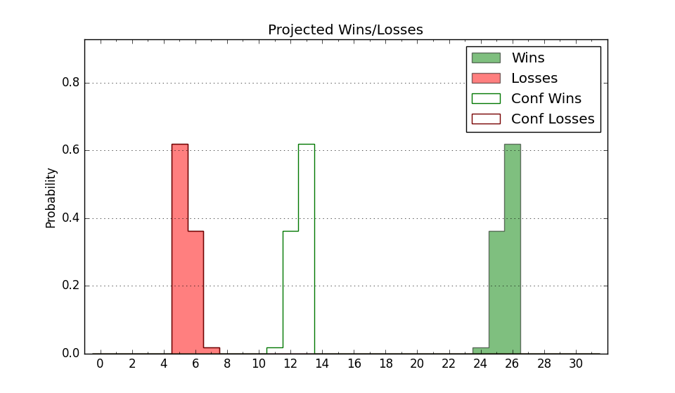

| Home | Game Probabilities | Conferences | Preseason Predictions | Odds Charts | NCAA Tournament |
| City: | Knoxville, Tennessee | |
| Conference: | SEC (4th)
| |
| Record: | 11-5 (Conf) 24-5 (Overall) | |
| Ratings: | Comp.: 35.0 (5th) Net: 35.0 (5th) Off: 120.1 (21st) Def: 85.1 (1st) SoR: 96.2 (2nd) |
| Remaining | ||||||
|---|---|---|---|---|---|---|
| Date | Opponent | Win Prob | Pred. | |||
| 3/5 | @ Mississippi (33) | 65.2% | W 69-65 | |||
| 3/8 | South Carolina (87) | 95.6% | W 73-53 | |||
| Previous | Game Score | |||||
| Date | Opponent | Win Prob | Result | Off | Def | Net |
| 11/4 | Gardner Webb (253) | 99.3% | W 80-64 | -9.3 | -14.7 | -23.9 |
| 11/9 | @Louisville (20) | 58.4% | W 77-55 | 10.6 | 18.7 | 29.3 |
| 11/13 | Montana (164) | 98.3% | W 92-57 | 6.6 | 2.1 | 8.7 |
| 11/17 | Austin Peay (275) | 99.4% | W 103-68 | 15.8 | -10.1 | 5.7 |
| 11/21 | (N) Virginia (100) | 94.0% | W 64-42 | -14.7 | 22.7 | 7.9 |
| 11/22 | (N) Baylor (22) | 72.3% | W 77-62 | 17.3 | -0.5 | 16.9 |
| 11/27 | Tennessee Martin (298) | 99.5% | W 78-35 | 2.1 | 17.7 | 19.9 |
| 12/3 | Syracuse (130) | 97.8% | W 96-70 | 11.0 | -14.7 | -3.8 |
| 12/10 | (N) Miami FL (185) | 97.5% | W 75-62 | -15.3 | 1.4 | -13.9 |
| 12/14 | @Illinois (12) | 52.1% | W 66-64 | 0.6 | 10.1 | 10.7 |
| 12/17 | Western Carolina (339) | 99.7% | W 84-36 | -10.3 | 20.0 | 9.7 |
| 12/23 | Middle Tennessee (107) | 97.0% | W 82-64 | -4.4 | -2.9 | -7.3 |
| 12/31 | Norfolk St. (197) | 98.8% | W 67-52 | -11.4 | 3.0 | -8.4 |
| 1/4 | Arkansas (45) | 89.7% | W 76-52 | 7.8 | 7.6 | 15.4 |
| 1/7 | @Florida (4) | 33.5% | L 43-73 | -38.2 | 3.3 | -34.9 |
| 1/11 | @Texas (41) | 69.8% | W 74-70 | 8.6 | -13.7 | -5.1 |
| 1/15 | Georgia (32) | 86.3% | W 74-56 | 9.5 | 10.4 | 19.9 |
| 1/18 | @Vanderbilt (44) | 71.8% | L 75-76 | 11.6 | -14.8 | -3.3 |
| 1/21 | Mississippi St. (34) | 86.5% | W 68-56 | -2.3 | 6.9 | 4.7 |
| 1/25 | @Auburn (1) | 19.6% | L 51-53 | -20.5 | 29.3 | 8.8 |
| 1/28 | Kentucky (11) | 77.9% | L 73-78 | -14.2 | -18.6 | -32.9 |
| 2/1 | Florida (4) | 63.2% | W 64-44 | -3.7 | 33.8 | 30.1 |
| 2/5 | Missouri (16) | 79.5% | W 85-81 | 13.0 | -21.4 | -8.5 |
| 2/8 | @Oklahoma (49) | 73.5% | W 70-52 | -2.0 | 19.8 | 17.8 |
| 2/11 | @Kentucky (11) | 50.9% | L 64-75 | -7.7 | -10.4 | -18.1 |
| 2/15 | Vanderbilt (44) | 89.7% | W 81-76 | 12.1 | -23.2 | -11.1 |
| 2/22 | @Texas A&M (27) | 61.6% | W 77-69 | 16.2 | -7.0 | 9.2 |
| 2/25 | @LSU (68) | 81.3% | W 65-59 | 1.4 | -4.8 | -3.4 |
| 3/1 | Alabama (6) | 64.9% | W 79-76 | -9.2 | -2.9 | -12.1 |
| Stats & Trends | |||||
|---|---|---|---|---|---|
| Current | Day | Week | Month | Season | |
| Composite | 35.0 | +0.1 | -0.9 | -0.1 | +8.6 |
| Comp Rank | 5 | +1 | -- | -1 | +7 |
| Net Efficiency | 35.0 | +0.1 | -0.9 | -0.4 | -- |
| Net Rank | 5 | +1 | -- | -1 | -- |
| Off Efficiency | 120.1 | +0.0 | -0.4 | +0.9 | -- |
| Off Rank | 21 | -- | -1 | +6 | -- |
| Def Efficiency | 85.1 | +0.0 | -0.4 | -1.4 | -- |
| Def Rank | 1 | -- | -- | +1 | -- |
| SoS Rank | 19 | +1 | +7 | +24 | -- |
| Exp. Wins | 25.6 | -0.0 | +0.5 | +1.4 | +3.9 |
| Exp. Conf Wins | 12.6 | -0.0 | +0.5 | +1.4 | +1.9 |
| Conf Champ Prob | 0.0 | -- | -- | -0.4 | -7.1 |

| Advanced Stats | ||
|---|---|---|
| Stat | Value | Rank |
| Off Eff FG % | 0.557 | 53 |
| Off Ast Ratio | 0.187 | 16 |
| Off ORB% | 0.382 | 11 |
| Off TO Rate | 0.128 | 48 |
| Off FT Ratio | 0.358 | 101 |
| Def Eff FG % | 0.407 | 1 |
| Def Ast Ratio | 0.105 | 2 |
| Def ORB% | 0.233 | 15 |
| Def TO Rate | 0.170 | 58 |
| Def FT Ratio | 0.261 | 38 |